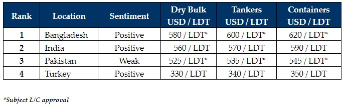

inWeekly Demolition Reports06/03/2023

A strong showing from nearly all of the major recycling markets over the last few weeks has left a far rosier picture(especially in India, Bangladesh, and even Turkey) and has encouraged a few more Sellers to market their vessels for sale for recycling.
Indeed, several sales market (and reportedly even private units) have also been concluded for the week, including another large LDT LNG (rich in non-ferrous) and another Capesize Bulker.
However, it has been a good week for dry charter rates (Capes in particular) with some healthy gains posted to alleviate some of the doom and gloom witnessed over the last few weeks. Recycling markets can therefore rest easy that the hitherto expected deluge of tonnage is unlikely to materialize any time soon.
Overaged containers and dry bulk units are still the most likely to head for recycling, amidst a healthy outlook in the tanker / wet sector at last, but the recent bullishness displayed in freight sectors has overall put a bit of a dampener on the expected output of supply.
On the local markets front, India has done away with the GST tax on the import of ships for recycling, in order to improve margins for End Buyers by about 2.5% and this has already started to reflect in the local markets that are showing greater positivity this week.
Bangladesh has been the main proponent of the surging markets for the week, with prices pushing on and sentiments soaring as demand has built up after a fairly inactive 6 – 8 months. This is in contrast to a glum Pakistani market, where L/C approvals are struggling even more than Bangladesh, whereas the Bangladeshi market is starting to ease up somewhat on L/Cs for select Buyers with private banking means for financing on fresh vessels.
At the far end, the Turkish market spent a week of inactivity, with steady plate prices (import and local), strong offerings, and still no confirmation on local fixtures.
For week 9 of 2023, GMS demo rankings / pricing for the week are as below.

📄 Download PDF: Ship-recycling-market-insight-week-09-2023-Eager-Eyes.pdfSource: GMS,Inc. ,https://www.gmsinc.net/gms_new/index.php/web